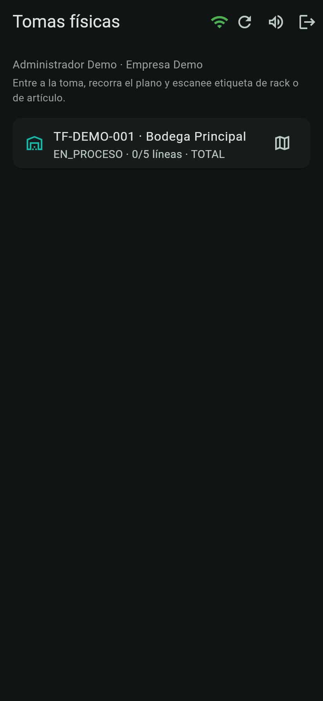
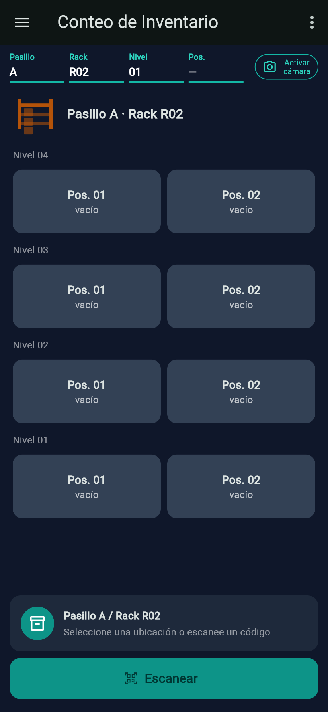
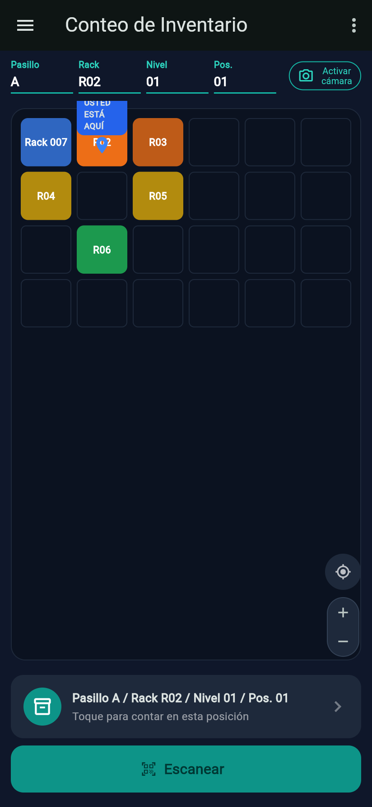
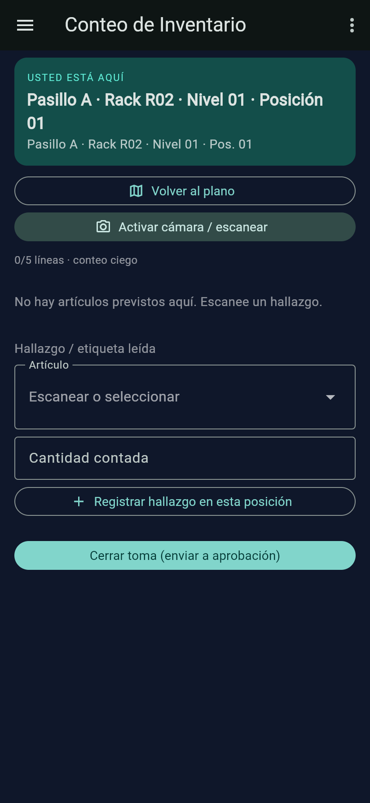
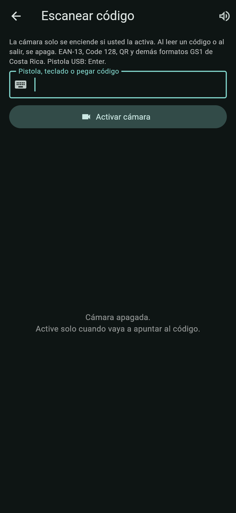
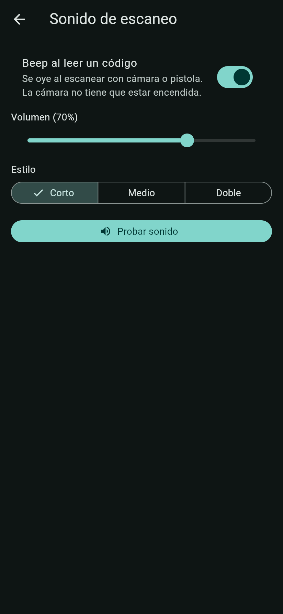

Android / PWA
App de bodega (Flutter)
Conteo en piso con plano de bodega, escaneo a demanda y modo offline. El stock solo cambia cuando oficina aprueba la toma.







Recorrido en piso
- Ingrese con Empresa (slug), Correo y Contraseña (ver Acceso).
- En Tomas físicas toque la toma (ej. TF-DEMO-001 · Bodega Principal).
- En Conteo de Inventario toque un rack del plano; se llenan Pasillo y Rack.
- En el frente del rack elija Nivel y Pos.; aparece el pin USTED ESTÁ AQUÍ.
- Toque la tarjeta de ubicación (“Toque para contar en esta posición”) o Escanear la etiqueta del rack.
- Digite lo contado y pulse OK, o registre un hallazgo. Al terminar: Cerrar toma (enviar a aprobación).
Lista de tomas
| Campo / control | Qué es | Cómo usarlo |
|---|---|---|
| Icono wifi | Conexión con la API (verde = en línea). | Sin conexión, los conteos se guardan offline. |
| Chip “N pend.” | Conteos offline por sincronizar. | Se envían al recuperar conexión. |
| Refrescar / Sonido de escaneo / Salir | Recargar lista, abrir ajustes de beep y cerrar sesión. | — |
| Tarjeta de toma | “COD · Bodega” y “ESTADO · contadas/total líneas · TIPO”. | Muestra tomas en Borrador y En proceso. |
Conteo de Inventario · plano
| Campo / control | Qué es | Cómo usarlo |
|---|---|---|
| Pasillo / Rack / Nivel / Pos. | Selectores de la ubicación actual. | Se llenan al tocar el plano o al escanear. |
| Activar cámara | Abre la pantalla Escanear código. | La cámara no queda encendida en segundo plano. |
| Plano | Racks coloreados por pasillo; ✓ cuando un rack está completo. | Solo módulos dinámicos de la bodega. |
| Recentrar / + / − | Controles del mapa. | — |
| Frente del rack | “Nivel NN” (el más alto arriba) × “Pos. NN”, con contadas/total o “vacío”. | Toque la celda a contar. |
| Tarjeta de ubicación | “Pasillo A / Rack R02 / Nivel 01 / Pos. 01”. | Tóquela para entrar al modo conteo. |
| Escanear | Lee etiqueta de rack/posición o de artículo. | Una etiqueta de posición entra directo al conteo. |
Modo conteo
| Campo / control | Qué es | Cómo usarlo |
|---|---|---|
| USTED ESTÁ AQUÍ | Posición actual y su etiqueta. | Confirme que está frente al hueco correcto. |
| Volver al plano / Activar cámara / escanear | Navegación y lectura. | — |
| contadas/total líneas · conteo ciego | Avance de la toma. El contador no ve el saldo del sistema. | — |
| Contado (UND) + OKObligatorio | Cantidad física de cada artículo previsto. | Guarda la línea (“Conteo guardado”). |
| Hallazgo / etiqueta leída | Artículo (escanear o seleccionar) y Cantidad contada. | Registrar hallazgo en esta posición para mercancía no esperada. |
| Cerrar toma (enviar a aprobación) | Termina el conteo. | Administrador, Gerente u Operador de bodega. |
Escanear código y sonido
| Campo / control | Qué es | Cómo usarlo |
|---|---|---|
| Pistola, teclado o pegar código | Entrada sin cámara. | La pistola USB envía Enter al final. |
| Activar cámara / Apagar cámara | Lector a demanda. | Se apaga al leer, al salir o al minimizar la app. |
| Beep al leer un código | Sonido al escanear con cámara o pistola. | Funciona aunque la cámara esté apagada. |
| Volumen (NN %) | Intensidad del beep (70 % por defecto). | — |
| Estilo: Corto / Medio / Doble | Tipo de beep. | Probar sonido para escucharlo. Preferencia del dispositivo. |